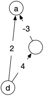

Chemins
- François Brucker
Prérequis :
Chemins entre deux sommets.
définitions
Un chemin d'un graphe $G=(V,E)$ (orienté ou non) est une suite de sommets $s_0 \dots s_k$ telle que :
- $s_is_{i+1}$ est une arête
- $s_is_{i+1} \neq s_js_{j+1}$ si $i\neq j$
Si le graphe possède de plus une valuation qui associe un réel à toute arête, la longueur d'un chemin est la somme des valuations de ses arêtes.
Dijkstra
L'algorithme de Dijkstra permet, à partir d'un graphe orienté valué, de trouver un chemin de longueur minimum entre deux sommets $d$ (départ) et $a$ (arrivée).
Il ressemble beaucoup à l'algorithme de Prim que l'on a vu précédemment, la seule différence est l'évaluation du coût d'entrée :
- dans l'algorithme de Prim il est égal à la valuation de l'arête rx
- dans l'algorithme de Diskstra il vaut l'addition de cout_entree(r) plus la valuation de l'arête rx.
Cette différence s'explique parce que le poids d'un arbre est la somme des valuations des arêtes qui le constitue alors que pour un chemin, avant d'aller en x, il faut déjà aller en r (dont le coût est cout_entree(x) ) puis de r à x (dont le coût est f(rx)).
La valuation d'une arête est forcément positive ou nulle.
pseudo-code
Entrée :
* un graphe orienté G = (V, E)
* une valuation f qui associe un réel positif à toute arête de G
* deux sommets d et a de V
Initialisation :
* cout_entree(x) = +∞ pour tout sommet x
* predecesseur(x) = x pour tout sommet x
* V' = {}, E' = {}
Algorithme :
* cout_entree(d) = 0
* ajoute d à V'
* r = d
* tant que a n'est pas dans V':
* pour tous les voisins sortant x de r qui ne sont pas dans V':
* si cout_entree(x) >= cout_entree(r) + f(rx):
cout_entree(x) = cout_entree(r) + f(rx)
predecesseur(x) = r
* soit x le sommet de V qui n'est pas dans V' minimisant cout_entree(x)
* r = x
* ajoute r à V' et (predecesseur(r), r) à E'
* chemin = [a]
* x = a
* tant que x est différent de d:
* x = predecesseur(x)
* ajoute x au début de chemin
Retour :
chemin
test

Allez de Paris à Rana en moins de temps possible en utilisant l'algorithme de Dijkstra sur le graphe ci-après, qui représente les différents vols et leurs durées entre différentes villes d'Europe.
solution
solution
Les différentes étapes de l'algorithme sont représentées dans les graphes ci-dessous.
- La figure se lit de gauche à droite et de haut en bas.
- $V'$ est en vert
- en magenta $r$ et les modification des prédécesseur et du cout d'entrée s'il y en a
- en orange le prédécesseur et le cout d'entrée.

preuve
En utilisant la preuve de l'algorithme de Prim, montrez que l'algorithme de Dijkstra rend un chemin de longueur minimum entre $d$ et $a$
solution
solution
On montre par récurrence que le chemin de x à r en remontant les prédécesseurs de r jusqu'à arriver à d est de longueur minimale et de coût cout_entree(r).
Au départ r = d, la propriété est donc vraie. On la suppose vrai jusqu'à l'étape $i$. A l'étape $i+1$, on a choisi r qui minimise le coût d'entrée parmi tous les éléments de V qui ne sont pas encore dans V'. Comme tous les chemins alternatifs entre d et r commencent en d, il existe une arête de ce chemin dont le départ (disons $u$) est dans V' et l'arrivée (disons $v$) n'y est pas. Prenons la première arête $uv$ pour laquelle ça arrive.
Par hypothèse de récurrence, cout_entree(u) est le cout minimum d'un chemin entre d et $u$ et cout_entree(v) est donc plus grand que cout_entree(u) + f(uv) (on a examiné ce cas lorsque l'on a fait rentrer $u$ dans V') et de cout_entree(r) (car c'est le min).
De là, le coût du chemin alternatif est plus grand également que cout_entree(r) car toutes les valuations sont positives : notre hypothèse est vérifiée.
complexité
Quelle est la complexité de l'algorithme de Disjkstra ?
solution
solution
On ajoute à chaque étape un élément, donc il y a au pire $\vert V \vert$ étapes. A chaque choix on compare les voisins de r. Ces comparaisons sont donc de l'ordre de $\mathcal{O}(\delta(r))$ opérations. Comme r est différent à chaque étapes, toutes ces comparaisons sont de l'ordre de $\mathcal{O}(\sum\delta(r)) = \mathcal{O}(\vert E \vert)$ opérations.
On prend ensuite le minimum parmi les éléments de V', ce qui prend $\mathcal{O}(\vert V \vert)$ opérations.
La complexité totale est alors en $\mathcal{O}(\vert E\vert + (\vert V \vert)^2)$.
On voit qu'elle dépend entièrement de la prise du minimum de cout_entree. En optimisant cette opération, on peut drastiquement diminuer la complexité de l'algorithme
Si l'on utilise un tas pour prendre le min, on doit au pire mettre à jour le tas pour chaque arête. Comme il va y a voir au maximum V éléments dans ce tas, la complexité de mise à jour est de $\mathcal{O}(\log_2(\vert V \vert))$, donc le coût total des mises à jour sera de $\mathcal{O}(\vert E \vert \log_2(\vert V \vert))$.
Enfin, comme on prend $\vert V \vert$ fois le minimum du tas, la complexité de trouver tous les r est de $\mathcal{O}(\vert V \vert \log_2(\vert V \vert))$. La complexité de chercher le minimum $\vert V \vert$ fois plus la mise à jour du tas est donc de : $\mathcal{O}((\vert E \vert + \vert V \vert)\log_2(\vert V \vert))$.
La complexité de Dijkstra avec un tas est alors : $\mathcal{O}(\vert E \vert + (\vert E \vert + \vert V \vert)\log_2(\vert V \vert))$ ce qui est égal à $\mathcal{O}((\vert E \vert + \vert V \vert)\log_2(\vert V \vert))$.
Ceci est mieux de prendre le minimum si le graphe ne contient pas énormément d'arêtes : $(\vert E \vert + \vert V \vert) \log_2(\vert V \vert) \leq \vert E\vert + (\vert V \vert)^2$, ce qui donne asymptotiquement $\vert E \vert \leq \frac{\vert V \vert^2}{\log_2(\vert V \vert)}$.
La page wikipédia précise qu'en utilisant un tas amélioré, dit tas de fibonnaci, on arrive même à faire descendre la complexité à $\mathcal{O}(\vert E \vert + \vert V \vert\log_2(\vert V \vert))$, ce qui est du coup tout le temps mieux que la prise de minimum naïve.
arborescence
On peut continuer l'algorithme de Diskstra après que $a$ ait été rentré dans $V'$, jusqu'à ce que l'on ait plus que des éléments de coût infini à faire rentrer dans $V'$ ou que $V'$ soit égal à $V$.
Montrez que pour tous les sommets $x$ qui ne peuvent pas entrer dans $V'$, il n'existe pas de chemin entre $d$ et $x$ dans $G$
solution
solution
A chaque fois que l'on ajoute un élément dans V' on vérifie tous ses voisins pour mettre à jour le coût d'entrée dans la structure. On procède comme le parcours en largeur et on a montré qu'il trouvait la composante connexe de sa racine.
preuve
Montrez que si l'on peut continuer l'algorithme de Dijkstra jusqu'à ce que $V'$ soit égal à $V$ on obtient un graphe $G' = (V, E')$ tel que :
- $\vert E' \vert = \vert V \vert -1$
- il existe un unique chemin entre $d$ et tout autre sommet
- le chemin entre $d$ et $x$ dans $G'$ est de poids minimum dans $G$
solution
solution
Cette preuve dérive directement de la preuve de l'algorithme de Dijkstra que l'on a fait précédemment.
Prim vs Dijkstra
- Quelle est la différence entre Prim et Dijsktra ?
- Montrez que les problèmes qu'ils résolvent sont différents et en déduire que l'arborescence obtenue par l'algorithme de Dijsktra pour un graphe non orienté peut être différente de l'arbre de poids minimum obtenu par Prim
solution
solution
Le graphe suivant montre que l'arborescence de Disjkstra sera différente de l'arbre de poids minimum donné par Prim.

Ne confondez pas les 2 problèmes !
chemin le plus long
L'algorithme de Dijkstra permet de répondre à la question : quelle est la longueur des chemins les plus courts partant d'un sommet. Mais qu'en est-il du pendant : quelle est la longueur des chemins les plus longs partant d'un sommet ?
On suppose que le problème est maintenant : quel est la longueur maximale d'un chemin passant une unique fois par chaque sommet ?
C'est le problème du plus long chemin élémentaire (les sommets n'apparaissent qu'une unique fois).
algorithme ?
Une idée serait de renverser les inégalités dans l'algorithme (de rentrer dans la structure à chaque fois l'élément de plus grand coût), puis de faire l'arborescence de Dijkstra pour chaque sommet de $V$ et enfin de prendre le chemin le plus long obtenu pour toutes les arborescences.
Montrez que cette approche ne fonctionne pas.
solution
solution
Même si l'on met à jour en cherchant à prendre le plus grand coût d'entrée à chaque fois, l'algorithme ne fonctionne pas. Prenez par exemple le graphe suivant :

Le chemin de longueur maximum $132$ ne sera jamais trouvé si les sommets sont rentré dans l'ordre 1, 2, 3.
chemin hamiltonien
Il est illusoire de tenter de trouver un algorithme pour résoudre le problème du chemin le plus long dans le cas général car il permettrait de résoudre le problème du chemin hamiltonien qui peut s'écrire ainsi : existe-t-il un chemin élémentaire passant par tous les sommets d'un graphe G donné ?
Montrer que si l'on pouvait résoudre le problème d'un chemin le plus long dans un graphe, on pourrait résoudre le problème du chemin hamiltonien.
solution
solution
Le plus long chemin élémentaire possible dans un graphe passe par tous les sommets. Donc un chemin élémentaire de longueur $\vert V \vert -1$ est hamiltonien.
Ce problème est NP-complet, c'est à dire qu'il fait parti des problèmes algorithmiques les plus durs à résoudre (et que le résoudre facilement permettrait de résoudre facilement tous les problèmes algorithmiques qu'on peut se poser).
Notez comment une petite différence — remplacer sommet (hamiltonien) par arête (eulérien) — rend un problème soit très simple soit très compliqué à résoudre.
Le problème de trouver un chemin hamiltonien dans un graphe peut paraître un peu artificiel mais il est crucial en pratique dans sa version voyageur de commerce qui est la base de toute optimisation de tournée ou de nombre de problèmes liés au transport.
graphes particuliers
Il existe tout de même 2 classes de graphes particulières qui admettent des solutions faciles pour le problème du chemin élémentaire le plus long :
graphe sans circuit
Un graphe orienté qui ne contient pas de circuit est souvent appelé DAG (direct acyclic graph).
On appelle tri topologique d'un graphe orienté $G = (V, E)$ un ordre total $<$ sur les sommets du graphe tel que $xy \in E$ implique $x < y$ dans l'ordre.
Montrer que :
- un graphe ne peut admettre de tri topologique que s'il n'a pas de cycle
- pour un DAG, il existe toujours un sommet qui n'a pas de voisins entrant (resp. sortant)
- en déduire qu'un DAG admet un tri topologique
- conclure sur le fait qu'un graphe est un DAG si et seulement s'il admet un tri topologique
solution
solution
1 :
Soit $c_0\dots c_k$ un cycle ($c_k = c_0$), quelque soit l'ordre total entre les sommets du graphe, il existe $i$ tel que $c_{i+1} < c_i$ ce qui est impossible si un tel ordre était topologique.
2 :
Supposons que tout sommet d'un DAG admette un voisin entrant et un voisin sortant, et prenons une arête $x_0x_1$ de ce graphe. Il existe donc une arête $x_1x_2$. Si $x_2 = x_0$ il existe un cycle dans le graphe, sinon il existe un chemin $x_0x_1x_2$. Il existe donc une arête $x_2x_3$. Si $x_3 \in {x_0, x_1 }$ il existe un cycle et sinon on a un chemin $x_0x_1x_2x_3$. On peut ainsi recommencer jusqu'à tomber sur un cycle par finitude du graphe. Ce n'est pas un DAG.
Le raisonnement est identique pour les voisins entrant.
3 :
en supprimant itérativement les sommets sans voisins rentrant d'un DAG (le graphe obtenu en supprimant un sommet d'un DAG est toujours un DAG puisque supprimer un sommet ne rajoute pas de cycle), on obtient un tri topologique.
On peut aussi le faire de façon optimale en utilisant un parcours en profondeur
4 :
On a montré que :
- cycle implique non tri topologique
- DAG (non cycle) implique tri topologique
On a donc bien l'équivalence : tri topologique est équivalent à DAG.
On utilisera souvent ce tri pour résoudre des problèmes d'ordonnancement (on le verra tout à l'heure dans un cas d'importance certaine).
Utiliser le tri pour trouver un chemin élémentaire de longueur maximum dans un DAG.
solution
solution
algorithme sur tri topologique :
Entrée :
* un graphe orienté G = (V, E)
* un tri topologique V0 < ... < Vn des éléments de V
Initialisation :
* longueur(x) = 0 pour tout sommet x
* predecesseur(x) = x pour tout sommet x
* V' = {}, E' = {}
Algorithme :
* pour v allant de V0 à Vn:
* pour chaque voisin sortant w de v:
* si longueur(w) < longueur(v) + 1:
* longueur(w) = longueur(v) + 1
* predecesseur(w) = v
* soit a l'élément de V ayant la plus grande longueur
* chemin = [a]
* x = a
* tant que x est différent de predecesseur(x):
* x = predecesseur(x)
* ajoute x au début de chemin
Retour :
chemin
La complexité est de $\mathcal{O}(\vert E \vert + \vert V \vert)$, ce qui est optimal.
Pour prouver l'algorithme, on montre par récurrence sur $\vert V \vert$ que longueur(x) est la longueur d'un plus long chemin finissant en x.
Si $\vert V \vert = 1$, c'est Ok. On suppose la propriété vraie à $\vert V \vert = n$. Pour $\vert V \vert = n +1$ on remarque que longueur(Vi) est la même pour le graphe $G$ et pour le graphe $G$ auquel on a enlevé $v_{n+1}$ pour tout $i \neq n+1$. Comme tous les prédécesseurs de $v_{n+1}$ seront vus pour l'algorithme et que longueur(Vi) ne change pas après l'étape $i$ on en conclut que la récurrence est vraie à $\vert V \vert = n +1$.
tournoi
Un tournoi est un graphe orienté $T = (V, E)$ tel que quelque soit $x \neq y \in V$ soit $xy$ soit $yx$ est une arête, mais pas les deux.
Un tournoi est très utilisé en théorie du choix social et en théorie des votes car il modélise bien les choix et les soucis entre choix locaux (quelque soit une alternative on en préfère l'une à l'autre) et optimum global (existe-t-il un choix qui est préféré à tous les autres).
Dans ce champ applicatif, les cycles sont problématiques (A est préféré à B qui est préféré à C qui est préféré à A).
Montrer qu'un tournoi n'admet pas de cycle si et seulement si il est transitif
solution
solution
Si le tournoi n'est pas transitif il existe $x$, $y$ et $z$ tels que $xy$ et $yz$ mais pas $xz$ : $xyzx$ est un cycle.
Réciproquement, s'il existe un cycle, prenons en un de longueur minimum : $c_0c_1c_2 \dots c_k$. Comme le cycle est de longueur minimum, $c_0c_2$ n'est pas une arête : le tournoi n'est pas transitif.
Mais pour ce qui nous intéresse, il est rigolo de voir qu'un tournoi admet toujours un chemin qui passe par tous les sommets une unique fois.
Montrez le.
solution
solution
Par récurrence, un tournoi à 1 sommet admet un chemin hamiltonien. Si on suppose cela vrai pour tout tournoi à moins de $n$ sommets, soit $T = (V, E)$ un tournoi à $n+1$ sommets.
On prend $x$ un sommet de ce tournoi. On a alors que $N^+(x) \cup N^-(x) \cup { x } = V$ et que la restriction de $T$ à $N^+(x)$ ou à $N^-(x)$ restent des tournois et ont strictement moins de $n+1$ sommets.
Il existe alors :
- un chemin hamiltonien $c_0\dots c_k$ dans la restriction de $T$ à $N^+(x)$
- un chemin hamiltonien $c'_0\dots c'_l$ dans la restriction de $T$ à $N^-(x)$
On en conclut que le chemin $c'_0 \dots c'_l x c_0 \dots c_k$ est hamiltonien dans $T$, ce qui termine la preuve par récurrence.
Donc quelles que soient les préférences, on peut toujours ordonner les préférences selon un ordre total (même s'il y en a plusieurs) localement cohérent (pour chaque élément il est préféré à celui d'avant et on lui préfèrera celui d'après dans l'ordre).
ordonnancement
Un problème d'ordonnancement peut se modéliser par un DAG nommé graphe de dépendances où si $xy$ est une arête alors il faut faire $x$ avant de pouvoir faire $y$.
Pourquoi ne doit-il pas y avoir de cycles dans un graphe de dépendance ?
solution
solution
Il est clair que s'il y a un cycle on ne peut réaliser le projet.
Vous résolvez des problèmes d'ordonnancement tous les jours comme par exemple comment s'habiller le matin (voir graphe ci-après)

Montrer que le tri topologique est une solution au problème d'ordonnancement. Appliquez le au problème de s'habiller le matin.
solution
solution
De plus un tri topologique fait que lorsque l'on s'attelle à la tache $v_i$ on a déjà fait tous ses prédécesseurs (ses prés-requis).
C'est encore un exemple où les contraintes sont locales et ou l'on cherche une solution globale.
variantes
On va montrer trois variantes de la recherche d'un chemin de longueur minimale entre deux sommets pour des graphes valués d'intérêt pratique.
poids négatifs
Montrez que si le graphe peut avoir des valuations positives et négatives, l'algorithme de Dijkstra ne garantit pas de trouver un chemin de longueur minimum
solution
solution

D'ailleurs, un tel chemin existe-t-il ?
Montrez que s'il existe un circuit de valuation strictement négative (on appelle ces circuit circuits absorbant), la notion même de chemin de valuation minimum cesse d'exister
solution
solution
Il suffit de pouvoir aller de $d$ au circuit absorbant puis du circuit à $a$ pour que la longueur minimale d'un chemin allant de $d$ à $a$ soit $-\infty$ (on repasse beaucoup de fois par le circuit absorbant qui va diminuer à chaque fois la longueur du chemin).

Pour régler ce problème, on utilise l'algorithme de Floyd-Warshall qui trouve, en $\mathcal{O}(\vert V \vert ^3)$ :
- les circuits absorbant s'il y en a
- tous les chemins de longueur minimum allant de $x$ à $y$ pour tous les sommets $x$ et $y$.
Si les poids sont positifs, il vaut mieux utiliser Dijkstra pour trouver 1 chemin entre $x$ et $y$ ou tous les chemins de $x$ à tous les autres sommets, mais si l'on cherche tous les chemins, il vaut mieux utiliser Floyd-Warshall.
graphe inconnu ou changeant
Un algorithme beaucoup utilisé lorsque le graphe peut changer ou s'il est très grand, voir inconnu (un terrain de jeu) est l'algorithme $A^*$.
Son principe est identique à celui de Dijkstra, mais plutôt que de prendre à chaque fois l'élément de coût minimum, on choisit un élément dont le cout_entree + une distance heuristique sur sa distance à l'arrivée est minimum.
Si l'heuristique est valide, l'algorithme va considérer moins de sommets que Dijkstra.
On l'utilise aussi souvent pour avancer directement à cet élément dans les algorithme de pathfinding par exemple.
Proposez une implémentation de l'algorithme $A^*$ pour le parcours dans une salle d'un petit robot (un étudiant lambda un jeudi matin par exemple).
solution
solution
- On peut prendre comme graphe la grille 2D carré de pas 1m par exemple
- s'il y a des murs on ne mets pas d'arêtes
- l'heuristique sera la distance L1 entre la position et l'arrivée.
On peut même se déplacer à chaque itération et se rapprocher normalement du but petit à petit.
On peut aussi montrer que si l'algorithme $A^*$ a une heuristique qui ne surestime pas la distance finale, il va bien trouver un chemin de poids minimum.
Donner un exemple qui montre que si l'algorithme $A^*$ a une heuristique qui surestime le coût du chemin réel il se peut qu'il ne rende pas le bon chemin.
solution
solution
Pour montrer qu'il peut se tromper, on donne une estimation de coût 0 à un chemin qui n'est pas de longueur minimale et $+\infty$ à sous les autres.
grand graphes
C'est la technique utilisée par google maps. Pour le graphe de google maps, il est impossible de faire un algorithme de Dijkstra à chaque requête, cela prendrait bien trop de temps !
On ne peut pas non plus mettre les chemins en dur, car il faudrait une base de donnée gigantesque. Comment résoudre ce problème épineux ?
En utilisant des hubs ! On remarque en effet que lorsque l'on fait un plus court chemin entre 2 sommets quelconques sur un graphe de google maps les débuts de chemins sont souvent identiques (on prend les grandes routes) et divergent fortement à la fin (petites routes jusqu'à la destination).
On procède alors à un pré-traitement en calculant pour chaque sommet $x$ tous les chemins les plus courts (on crée l'arborescence de ce sommet). Et pour chaque chemin ainsi crée, on choisit la ville avec le plus d'habitants qui se trouve sur le second tiers du chemin. Toutes ces villes constituent les hubs de ce sommet $x$.
Notez que si l'on va de A à B sur des routes à double sens, le hub pour le chemin allant de A à B est le même que le hub pour le chemin allant de B à A.
Sur une carte de géographie, on remarque qu'il y a très peu de hubs !
Une fois ce pré-traitement effectué, lorsqu'un utilisateur veut aller de A à B :
- google choisi un hub commun H1 à A et B et crée 2 routes, une allant de A à H1 et l'autre allant de H1 à B
- on récurse pour les chemins créés en cherchant un hub commun H2 à A et H1 et un hub commun H2' à H1 et B et ainsi de suite jusqu'à arriver à des chemins "courts".
- jusqu'à arriver à des chemins courts où l'on peut faire un dijkstra entre les deux sommets rapidement.
Le temps de calcul en est très réduit puisque les hubs sont calculés en amont de la requête.
Montrez avec les 3 (plus belles) villes (de France) que sont Marseille, Strasbourg et Brest comment les choix de hubs peuvent drastiquement influencer le chemin proposé.
solution
solution
- Marseille a Dijon et Paris dans ses hub. Le premier pour aller de Marseille à Strabourg et le second pour aller de Marseille à Brest
- Strasbourg à également Dijon et Paris dans ses hubs le premier pour aller à Marseille (c'est symétrique) et le second pour aller à Brest.

Google maps peut alors vous proposer deux grands chemins pour aller de Marseille à Strasbourg, soit en passant par Dijon soit par Paris (bon il ne le fait pas car un chemin est bien plus long que l'autre, mais c'est l'idée).
Les hubs, en plus d'être efficaces en temps de calculs sont aussi une chouette solution pour proposer des itinéraires différents pour aller entre 2 villes.